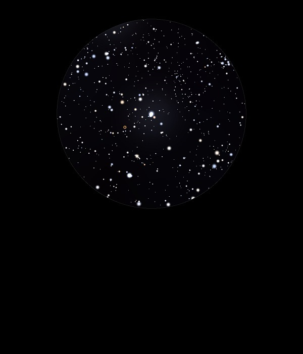

NGC 2261
Variable
Nebula in Monoceros
NGC 2261
Mag 9.0
Hubble's Variable Nebula, Caldwell 46
24/01/15
Small but quite
bright, especially in 12mm with UHC filter which darkens the
surrounding star field
Still quite well
defined without filter and appears almost Galaxy like